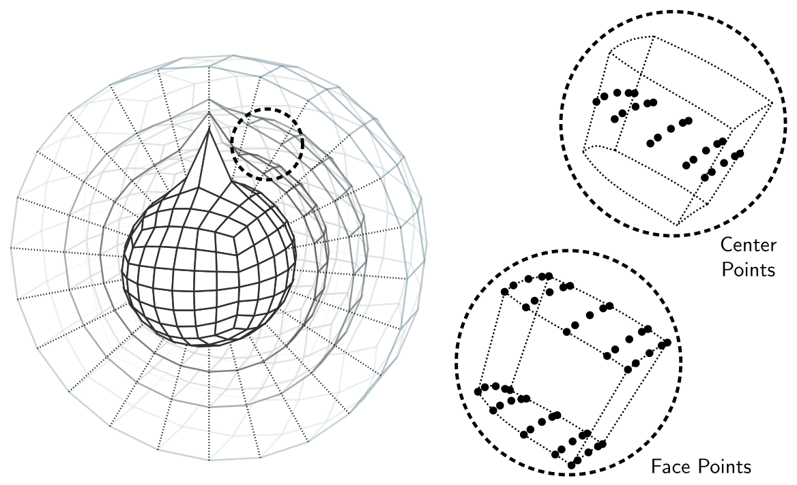

Hybrid grids and generalized coordinates
Every ClimaCore grid is the image of a reference element under a coordinate map, and every operator works in the reference coordinates and converts with the metric terms of that map. This page defines the bases and metric terms that appear throughout the library, describes how the cubed sphere and terrain-following vertical coordinates fit the same description, and explains why vector fields carry a basis with them. The general tensor calculus follows [31]; the atmosphere paper [2] states the equations of motion in these coordinates.
Reference and physical coordinates
An element of a horizontal grid is the image of the reference square ξ = (ξ¹, ξ²) ∈ [-1, 1]²; a cell of an extruded grid is the image of the reference cube (ξ¹, ξ², ξ³). The map x = r(ξ) is bilinear for a plane, the equiangular gnomonic projection of a cube face for the sphere [5, 6], and, in the vertical, the composition of a stretching function with a terrain-following transformation. Two bases are attached to every point of the physical domain:
- the covariant basis
e_i = ∂r/∂ξⁱ, tangent to the coordinate lines; - the contravariant basis
eⁱ = ∇ξⁱ, normal to the coordinate surfaces.
They are dual, e_i ⋅ eʲ = δᵢʲ, and coincide only where the map is orthogonal and unit-scaled. A vector u has covariant components u_i = u ⋅ e_i and contravariant components uⁱ = u ⋅ eⁱ, related by the metric tensor g_ij = e_i ⋅ e_j and its inverse gⁱʲ: uⁱ = gⁱʲ u_j. The Jacobian determinant J = √det g converts reference volumes to physical volumes, and the quadrature weight times J is the discrete volume of a node.
The figure on the Mathematical framework page shows both bases on a terrain-following grid.
The local geometry stored at every node of a grid holds the coordinates, J, the Jacobian matrix ∂x/∂ξ and its inverse, and the metric tensors. Fields.local_geometry_field(space) exposes it; the operators read it implicitly.
Vector types
Because the bases vary from node to node, a vector component has meaning only together with its basis. ClimaCore therefore represents vectors by typed components:
Geometry.Covariant12Vector,Covariant3Vector,Covariant123Vector(C12,C3,C123): covariant components. The prognostic velocity of the atmosphere is stored this way:u₁, u₂on centers,u₃on faces.Geometry.Contravariant12Vector,Contravariant3Vector,Contravariant123Vector(CT12,CT3,CT123): contravariant components, the natural form for a flux through a coordinate surface. Their units are reference coordinate per second, not meters per second.Geometry.UVVector,WVector,UVWVector: components in the local orthonormal frame, zonal, meridional, and radial on the sphere,x,y,zin a box. This is the frame in which physical quantities are set and read, and in which DSS averages vectors across element boundaries, where the covariant bases of neighboring elements differ.Geometry.Cartesian123Vectorand related types: a single global Cartesian frame, used for output and visualization.
Conversions between these types are constructors that take the local geometry, Geometry.Contravariant3Vector(u, local_geometry), and the operators perform them internally: a Divergence accepts a vector in any basis and converts it to contravariant components before differencing; a Gradient returns covariant components. Writing a model consists largely of choosing which components each term needs; the introduction tutorial shows the conversions in use.
Differential operators in generalized coordinates
With the metric terms in hand, the continuous operators take the forms the discrete operators implement,
\[(\nabla \psi)_i = \frac{\partial \psi}{\partial \xi^i}, \qquad \nabla \cdot u = \frac{1}{J} \frac{\partial (J u^i)}{\partial \xi^i}, \qquad (\nabla \times u)^i = \frac{1}{J} \epsilon^{ijk} \frac{\partial u_k}{\partial \xi^j}.\]
The gradient of a scalar is covariant, the divergence needs contravariant components, and the curl maps covariant components to contravariant ones, which fixes the input and output types of Gradient, Divergence, and Curl. The divergence of a second-rank tensor (a momentum flux ρ u ⊗ u) is more delicate: in general coordinates the derivative of the second index's basis vectors contributes Christoffel-symbol terms [32]. ClimaCore's Divergence of a tensor converts the first index to contravariant components and differences each row as a scalar, leaving the second index in the basis it was given; this is exact when that basis is constant across the element, as for UVVector ⊗ UVVector on a plane, and omits the Christoffel terms otherwise. The atmosphere sidesteps the issue by writing momentum advection in vector-invariant form, so that only scalar gradients and curls of vectors appear, and the flux-form examples on the sphere are limited to shallow-water depth and tracers.
The metric terms ∂x/∂ξ are computed at grid construction. For the cubed sphere, they are obtained by forward-mode automatic differentiation of the coordinate map (the autodiff_metric keyword of SpectralElementGrid2D, on by default), which gives them to round-off rather than to the accuracy of a spectral derivative of the nodal coordinates. A free-stream-preserving discrete metric is what makes a uniform flow stay uniform on a curved grid [33].
The cubed sphere
The sphere is covered by six panels, each the gnomonic image of a cube face divided into Ne × Ne elements with equiangular spacing [5, 6]. Element edges are great-circle arcs, the map is smooth within a panel, and the coordinate directions are discontinuous across panel edges, which is why vectors must be averaged in the orthonormal frame during DSS. Meshes.EquiangularCubedSphere(domain, Ne) builds the mesh; Meshes.EquidistantCubedSphere and Meshes.ConformalCubedSphere are the alternatives.

A shallow extruded cubed-sphere grid with a large mountain at a pole, and the nodes of one element: the 5 × 5 Gauss–Lobatto–Legendre points of a degree-4 element on each of three levels, at the cell centers (top) and at the cell faces (bottom). Element edges follow the terrain-following levels. From [2]. The horizontal resolution is set by Ne and the polynomial degree: with Ne = 30 and Nq = 4 the average node spacing is about 103 km, with Ne = 120 about 26 km [2].
Two global geometries are available. Geometry.DeepSphericalGlobalGeometry keeps the radial dependence of the metric, so that a shell of thickness zₜ above radius R has its physical volume, and the Coriolis force has its full three-dimensional form. Geometry.ShallowSphericalGlobalGeometry evaluates the horizontal metric at R at every height, the shallow-atmosphere approximation [11].
Terrain-following vertical coordinates
An extruded grid is the image of the reference cube under a map that is the identity in the horizontal reference coordinates and, in the vertical, the composition of two one-dimensional transformations:
\[z(\xi^1, \xi^2, \xi^3) = Z\bigl(z_\mathrm{ref}(\xi^3),\, h(\xi^1, \xi^2)\bigr), \qquad z_\mathrm{ref} = z_\mathrm{top}\, \zeta(\xi^3),\]
where ζ is the stretching, h the surface elevation, and Z the terrain-following adaption. Levels are uniform in ξ³; the vertical grid constructor places the Nv + 1 faces at z_ref and the adaption warps them.
Stretching (Meshes.StretchingRule) concentrates levels near the surface. With η = z_ref / z_top, the implemented rules are
\[\begin{aligned} \text{Uniform:}\quad & \eta = \xi^3, \\ \text{Exponential:}\quad & \xi^3 = \frac{1 - e^{-\eta/\widehat{h}}}{1 - e^{-1/\widehat{h}}},\quad \widehat{h} = \frac{H}{z_\mathrm{top}}, \\ \text{Hyperbolic tangent:}\quad & \eta = 1 - \frac{\tanh\bigl(\gamma (1 - \xi^3)\bigr)}{\tanh \gamma}. \end{aligned}\]
with H a scale height (Meshes.ExponentialStretching(H)) and γ solved so that the lowest cell has a prescribed height dz_surface (Meshes.HyperbolicTangentStretching(dz_surface)); Meshes.GeneralizedExponentialStretching(dz_bottom, dz_top) fits an exponential to two target spacings. The CliMA atmosphere uses hyperbolic tangent stretching with a 30 m surface cell, γ ≈ 2.8 for 43 levels in a 30 km domain [2].
Adaption (Hypsography.HypsographyAdaption). The Gal-Chen map (Hypsography.LinearAdaption(z_surface)) displaces each level by a fraction of the terrain height that decreases linearly to zero at the top [12]:
\[Z = z_\mathrm{ref} + \left(1 - \frac{z_\mathrm{ref}}{z_\mathrm{top}}\right) h .\]
The SLEVE map (Hypsography.SLEVEAdaption(z_surface, ηₕ, s)) decays the displacement with a hyperbolic sine and removes it above the reference height ηₕ z_top, so that the upper levels are flat [13]:
\[Z = \eta\, z_\mathrm{top} + h\, \frac{\sinh\bigl((\eta_h - \eta)/(s\,\eta_h)\bigr)}{\sinh(1/s)} \ \ (\eta \le \eta_h), \qquad Z = \eta\, z_\mathrm{top}\ \ (\eta > \eta_h),\]
with ηₕ ∈ [0, 1] and the decay scale s a fraction of z_top; the map is one-to-one when s z_top exceeds the maximum of h, which the constructor checks. Both maps reduce to Z = z_ref where h = 0.
Metric terms of the map. Writing ∂_i for ∂/∂ξⁱ, and taking a Cartesian domain with x = x(ξ¹), y = y(ξ²) for definiteness (on the sphere the horizontal factors are those of the panel map), the vertical covariant basis vector is e_3 = ∂_3 z\, \widehat{k}, aligned with the vertical, while the horizontal covariant vectors acquire a vertical component, e_1 = ∂_1 x\, \widehat{\imath} + ∂_1 z\, \widehat{k} (and likewise e_2): the coordinate lines follow the terrain. The contravariant vectors are the reverse: e¹ and e² stay horizontal, and e³ = ∇ξ³ tilts,
\[e^3 = \frac{1}{\partial_3 z}\left(\widehat{k} - \frac{\partial_1 z}{\partial_1 x}\,\widehat{\imath} - \frac{\partial_2 z}{\partial_2 y}\,\widehat{\jmath}\right), \qquad J = \partial_1 x\, \partial_2 y\, \partial_3 z ,\]
so the metric components g^{31} = e^3 ⋅ e^1 and g^{32} = e^3 ⋅ e^2 are proportional to the slopes ∂_1 z, ∂_2 z of the level surfaces and vanish where the levels are flat. For the Gal-Chen map, ∂_3 z = (dz_ref/dξ³)(1 − h/z_top) and ∂_1 z = (1 − z_ref/z_top)\, ∂_1 h, so the tilt persists to the top; for SLEVE, it is zero above ηₕ z_top. Fields.local_geometry_field stores ∂x/∂ξ, its inverse, J, and gⁱʲ at every node, evaluated by forward-mode differentiation of the map.
Consequences. The contravariant vertical velocity is the flow through a level surface,
\[u^3 = \frac{1}{\partial_3 z}\left(w - u\, \frac{\partial_1 z}{\partial_1 x} - v\, \frac{\partial_2 z}{\partial_2 y}\right),\]
so the no-flow condition at the surface ξ³ = 0 is u³ = 0, which is w = u ⋅ ∇h in Cartesian components: the flow follows the terrain. The atmosphere's prognostic velocity uses the covariant u₃, and the boundary condition fixes it from u₁, u₂ through u³ = g³¹ u₁ + g³² u₂ + g³³ u₃ = 0. Steep, unsmoothed terrain produces large ∂_1 z, hence large g³¹, and a spurious horizontal pressure-gradient error; Hypsography.diffuse_surface_elevation! smooths a surface-elevation field before it is used. The consistency of the discrete metric terms across the horizontal and vertical operators determines whether a resting atmosphere stays at rest over terrain [34]; alternative smoothed coordinates are discussed by [35, 36]. Use terrain-following coordinates shows the constructors and an executed stretching example.